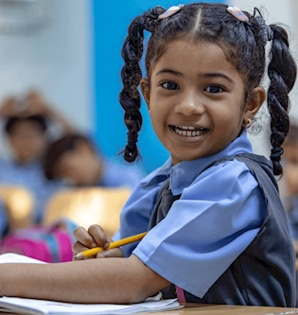
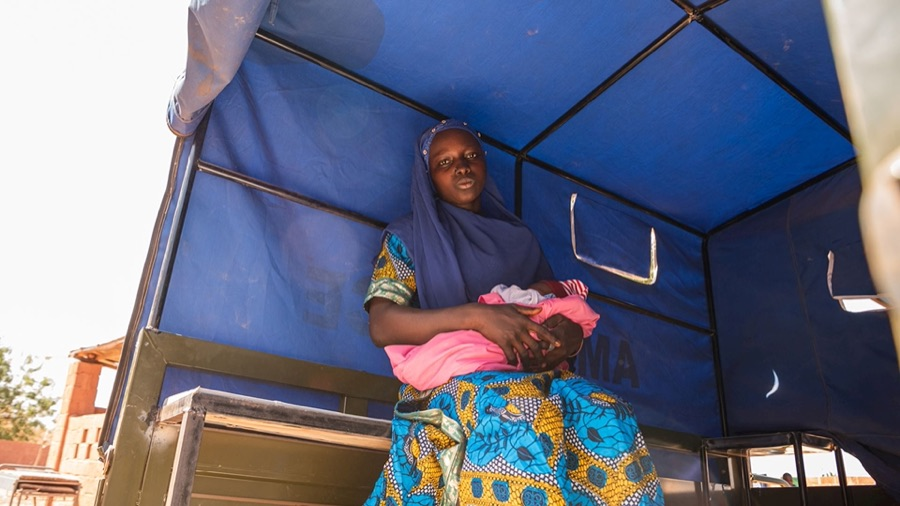
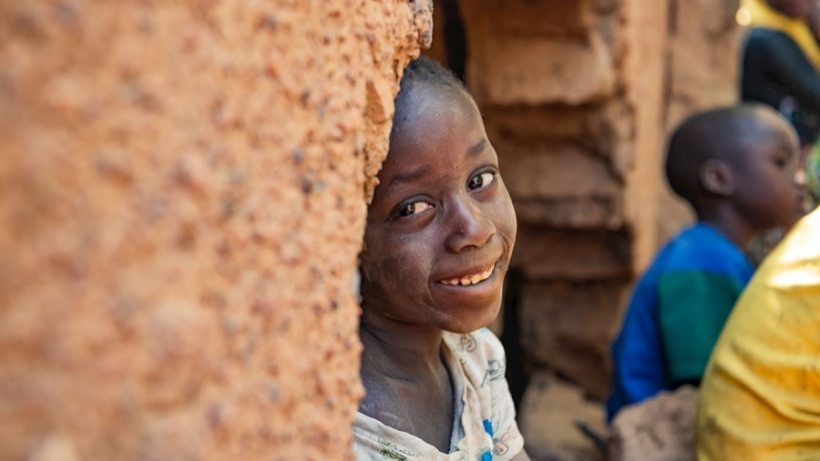
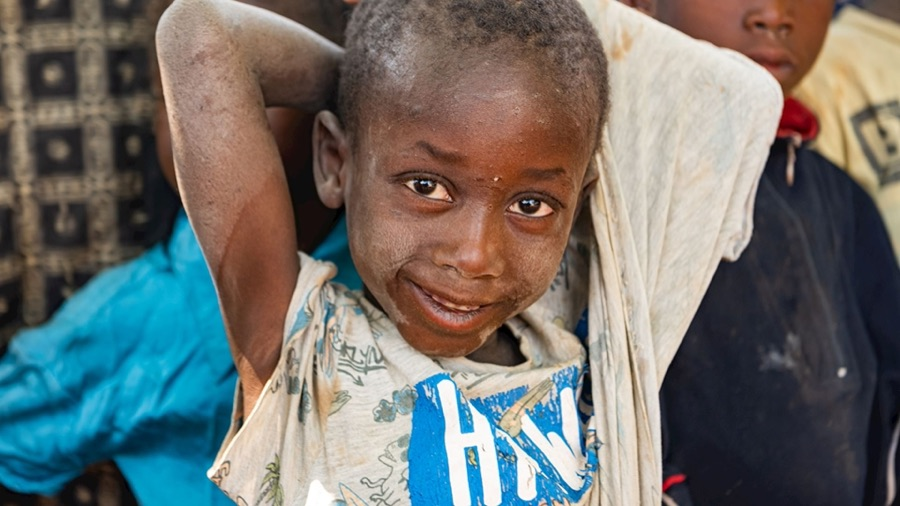
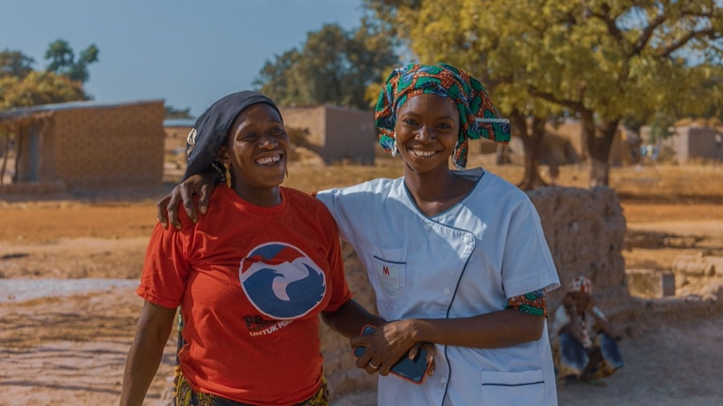
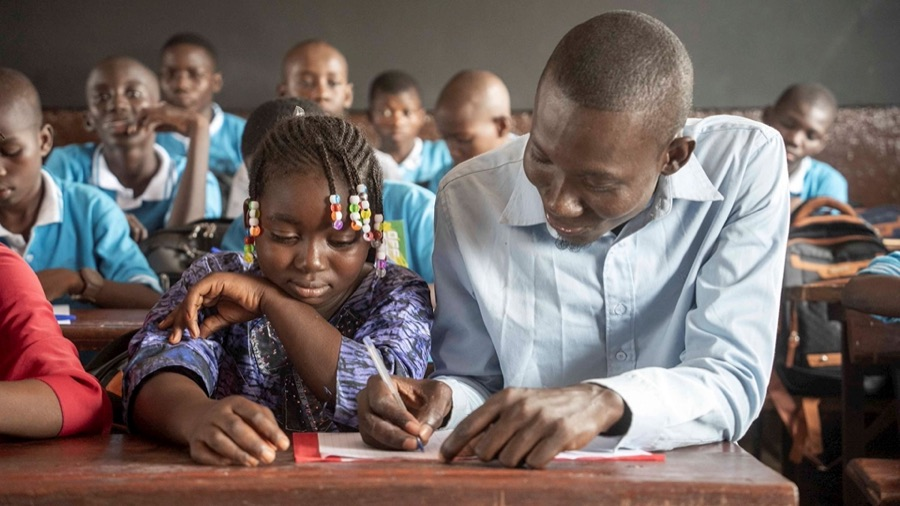

- L'enfant reste dans sa famille élargie, suivi par un travailleur social local
- Présentation de l'enfant sous trois semaines, nouvelles chaque année
- Éligible à la zakat, arrêt possible à tout moment
Alimentation
Une aide alimentaire mensuelle pour l'enfant et sa famille d'accueil.
Scolarité
Frais d'inscription, uniforme, fournitures, soutien scolaire.
Santé
Bilan annuel, vaccins, soins et médicaments.
Suivi
Visites régulières de nos travailleurs sociaux, rapport annuel au parrain.
Pourquoi parrainer un orphelin
Dans les pays où nous agissons, un enfant qui perd son père perd souvent l'école en même temps : il faut travailler, ou la famille élargie n'a pas les moyens de le garder. Le parrainage d'orphelin répond à ce moment précis. Il ne place pas l'enfant dans un orphelinat : il donne à sa mère, à ses grands-parents ou à son oncle les moyens de le garder, de le nourrir et de l'envoyer à l'école.
Muslim Hands accompagne 4 135 orphelins dans 11 pays, avec des équipes locales qui rendent visite à chaque enfant. Depuis 1993, le réseau a parrainé plus de 50 000 enfants.

Parrainer un orphelin
Soit 13 € par mois après réduction d'impôt de 66 %.
Je parraine un orphelinPrésentation de l'enfant sous trois semaines · arrêt possible à tout moment
Ce que disent les textes
« Moi et celui qui prend en charge l'orphelin serons ainsi au Paradis », dit le Prophète en rapprochant l'index et le majeur. Prendre en charge un orphelin (la kafala) fait partie des œuvres les plus recommandées en islam, et l'orphelin figure parmi les bénéficiaires de la zakat. Votre parrainage peut donc être réglé avec votre zakat al maal : cochez la case « Zakat » lors du don.

Où attendent les enfants
Vous choisissez le pays. Sinon, l'enfant qui attend depuis le plus longtemps vous est attribué.

Gaza, Palestine
Parrainer à Gaza
Yémen et Somalie
Parrainer au Yémen
Mali, Niger, Sénégal, Gambie
Parrainer au Sahel
Pakistan, Bangladesh, Sri Lanka
Parrainer en Asie
Enfants en situation de handicap
Parrainer un enfant handicapé
Là où le besoin est le plus grand
Parrainer maintenantComment ça marche
Vous choisissez
Un pays, ou l'enfant qui attend depuis le plus longtemps. Prélèvement mensuel de 39 €.
Nous vous présentons l'enfant
Sous trois semaines : prénom, âge, situation, photo.
Votre aide arrive chaque mois
Remise à la famille d'accueil et suivie par notre travailleur social local.
Vous recevez des nouvelles
Un rapport annuel avec photo et bulletin ; vous pouvez écrire à votre filleul.
Ce que coûte vraiment un parrainage
| Formule | Montant | Après réduction d'impôt de 66 % |
|---|---|---|
| Mensuel | 39 € | 13,26 € |
| Trimestriel | 117 € | 39,78 € |
| Annuel | 468 € | 159,12 € |
| Enfant en situation de handicap, mensuel | 59 € | 20,06 € |
Le reçu fiscal annuel vous parvient en janvier. Montants à confirmer par l'équipe avant publication.

« J'ai été parrainé à huit ans, après la mort de mon père. Aujourd'hui, j'enseigne dans l'école où j'ai appris à lire. »Mamady, enseignant à Ségou, Mali
« Kadjatou voulait devenir sage-femme. Son parrain l'a accompagnée jusqu'au diplôme. Elle exerce à Bamako. »Programme orphelins, Mali
Questions fréquentes sur le parrainage
Combien coûte le parrainage d'un orphelin ?
39 € par mois, soit 13 € après réduction d'impôt de 66 %. Le prélèvement est mensuel et peut être arrêté à tout moment.
Que finance mon parrainage ?
Alimentation, scolarité, suivi médical et soutien à la famille d'accueil de l'enfant, qui reste dans sa communauté.
Puis-je choisir le pays ou l'enfant ?
Vous choisissez le pays parmi les 11 du programme ; l'enfant qui attend depuis le plus longtemps vous est présenté sous trois semaines.
Ai-je des nouvelles de l'enfant ?
Un rapport annuel avec photo et résultats scolaires ; vous pouvez lui écrire via l'équipe, qui traduit.
Le parrainage compte-t-il comme zakat ?
Oui : les orphelins du programme répondent aux critères d'éligibilité. Cochez la case Zakat lors du don.
Que se passe-t-il quand l'enfant devient majeur ?
Le parrainage s'arrête à 18 ans ou à la fin des études secondaires ; nous vous proposons alors un nouvel enfant.
Puis-je parrainer à plusieurs ?
Oui, une famille, une classe ou une entreprise peut partager un parrainage via une cagnotte solidaire.

Un parrain, une rentrée.
39 € par mois. Présentation de l'enfant sous trois semaines.
Je parraine